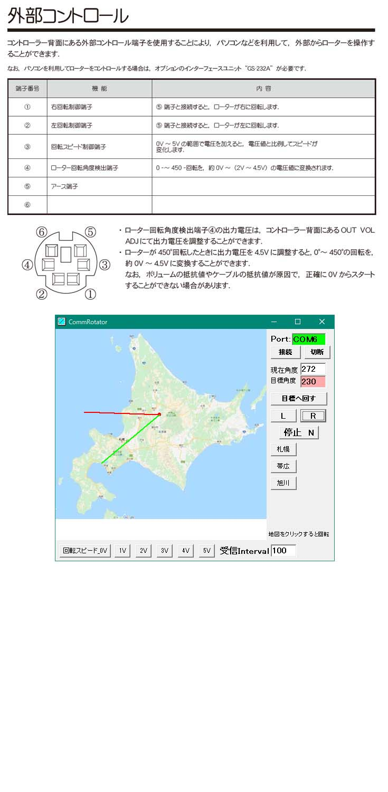

ローテーター G-1000-DXAをarduinoでコントロール
ローテーター G-1000-DXAをarduinoでコントロールできないかと思い試してみることにした。
まずコントローラー背面のコネクターからさがす。
昔のマウスやキーボードについていたものと同じなのが判明。
故障したマウスからケーブルを取り使用。
配線はarduinoの7,8番(5V)を2つのフォトカプラの入力アノードに、
2つのフォトカプラの出力コレクタに1,2番(9.5V)をつなぎ、
フォトカプラ入力カソードに220ΩをはさんでGNDに
A3(アナログ入力)を4番に、
GNDはフォトカプラ出力のエミッタに、接続。
3番の回転制御端子は0-5Vを加えるとスピードが変化しますとあるが
試しにエネループ4本を接続したところ1.4Aも流れてしまい、動きも少しの間だけ早くなったがその後
動きが変になり、うまくいかなかった。
Arduinoのアナログ出力につないでもダメだったので、今のところ、つなぎ方がわからない。
アプリでの動作はスピードが遅い事以外はうまくいった。
---------------------------- arduinoのスケッチ ----------------------------------------
int analogPin = 3; //ローテーターの電圧
int RPin = 7;
int LPin = 8;
int SpeedPin = 9;
int val = 0; //電圧5V/1024の値(0-1023の整数値)
float f;
float z;
float Freqf;
int Freqval = 0;
void setup() {
pinMode(LED_BUILTIN, OUTPUT);
pinMode(RPin, OUTPUT); //R
pinMode(LPin, OUTPUT); //L
digitalWrite(RPin, LOW);
digitalWrite(LPin, LOW);
analogWrite(SpeedPin, 0);
Serial.begin(9600); //9600 115200
while(!Serial);
}
void loop() {
f = analogRead(analogPin); //入力ピンの読み取り val = analogRead(analogPin);
z = f *5 / 1024; //Serial.print(z); //電圧の表示 val *5 / 1024 //Serial.print("V ");
val = (int) f; //Serial.print(val); //Serial.print(" ");
Freqf=(z-0.15)*97.74182;
Freqval = (int) Freqf; //Serial.print(" "); //Serial.print(Freqval);
Serial.println(Freqval); //Serial.println("_Degree");
delay(200);
//Serial.println("Hello,world."); //delay(1000);
String str = Serial.readStringUntil('Q');
if (str == "hello") { digitalWrite(LED_BUILTIN, HIGH); Serial.println(str); delay(2000); }
if (str == "R") { digitalWrite(LPin, LOW); digitalWrite(RPin, HIGH); delay(100); }
if (str == "L") { digitalWrite(RPin, LOW); digitalWrite(LPin, HIGH); delay(100); }
if (str == "N") { digitalWrite(RPin, LOW); digitalWrite(LPin, LOW); delay(100); }
if (str == "0") { analogWrite(SpeedPin, 0); delay(100); } //Serial.println(str);
if (str == "1") { analogWrite(SpeedPin, 51); delay(100); } //Serial.println(str);
if (str == "2") { analogWrite(SpeedPin, 102); delay(100); } //Serial.println(str);
if (str == "3") { analogWrite(SpeedPin, 153); delay(100); } //Serial.println(str);
if (str == "4") { analogWrite(SpeedPin, 204); delay(100); } //Serial.println(str);
if (str == "5") { analogWrite(SpeedPin, 255); delay(100); } //Serial.println(str);
digitalWrite(LED_BUILTIN, LOW);
}
------------------------------- Delphi6のソース --------------------------------------------------
unit Unit1;
interface
uses
Windows, Messages, SysUtils, Variants, Classes, Graphics, Controls, Forms,
Dialogs, Synaser, ExtCtrls, StdCtrls, jpeg , Math;
type
TForm1 = class(TForm)
Memo1: TMemo;
Timer1: TTimer;
Label1: TLabel;
Edit_CommNum: TEdit;
btnStart: TButton;
btnStop: TButton;
edSend: TEdit;
btnSend: TButton;
Button_L: TButton;
Button_N: TButton;
Button_R: TButton;
Button_1V: TButton;
Button_2V: TButton;
Button_3V: TButton;
Button_4V: TButton;
Button_5V: TButton;
Button_0V: TButton;
Image1: TImage;
Label2: TLabel;
Edit_Degree: TEdit;
Label3: TLabel;
Button1: TButton;
Edit_Interval: TEdit;
Label_Interval: TLabel;
Edit_DegreeNow: TEdit;
Label_DegreeNow: TLabel;
Button_Sapporo: TButton;
Button_Obihiro: TButton;
Button_Asahikawa: TButton;
Image2: TImage;
Label4: TLabel;
Button_RTS_ON: TButton;
Button_RTS_OFF: TButton;
EditCOM_Other: TEdit;
Button_COM3_Start: TButton;
Button_COM3_Stop: TButton;
Button_DTR_ON: TButton;
Button_DTR_OFF: TButton;
Panel_RTS: TPanel;
Panel_DTR: TPanel;
Edit_SendString: TEdit;
Edit_Recvstring: TEdit;
Button_Test_SendString: TButton;
Button_Test_Recvstring: TButton;
Label_Test: TLabel;
procedure btnStartClick(Sender: TObject);
procedure btnStopClick(Sender: TObject);
procedure Timer1Timer(Sender: TObject);
procedure btnSendClick(Sender: TObject);
procedure FormCloseQuery(Sender: TObject; var CanClose: Boolean);
procedure Button_LClick(Sender: TObject);
procedure Button_NClick(Sender: TObject);
procedure Button_RClick(Sender: TObject);
procedure FormCreate(Sender: TObject);
procedure Button_0VClick(Sender: TObject);
procedure Button_1VClick(Sender: TObject);
procedure Button_2VClick(Sender: TObject);
procedure Button_3VClick(Sender: TObject);
procedure Button_4VClick(Sender: TObject);
procedure Button_5VClick(Sender: TObject);
procedure Image1MouseDown(Sender: TObject; Button: TMouseButton;
Shift: TShiftState; X, Y: Integer);
procedure Button1Click(Sender: TObject);
procedure Edit_IntervalKeyUp(Sender: TObject; var Key: Word;
Shift: TShiftState);
procedure Button_SapporoClick(Sender: TObject);
procedure Button_ObihiroClick(Sender: TObject);
procedure Button_AsahikawaClick(Sender: TObject);
procedure Image2MouseDown(Sender: TObject; Button: TMouseButton;
Shift: TShiftState; X, Y: Integer);
procedure Button_RTS_ONClick(Sender: TObject);
procedure Button_RTS_OFFClick(Sender: TObject);
procedure Button_COM3_StartClick(Sender: TObject);
procedure Button_COM3_StopClick(Sender: TObject);
procedure Button_DTR_ONClick(Sender: TObject);
procedure Button_DTR_OFFClick(Sender: TObject);
procedure Button_Test_SendStringClick(Sender: TObject);
procedure Button_Test_RecvstringClick(Sender: TObject);
private
{ Private 宣言 }
ser: TBlockSerial;
Degree_Now:Integer;
AutoTurn:Boolean;
public
{ Public 宣言 }
end;
var
Form1: TForm1;
implementation
{$R *.dfm}
procedure TForm1.FormCreate(Sender: TObject);
var
bmp: TBitmap; jpg: TJPEGImage;
begin
Left:=100;Top:=100; AutoTurn:=False;
btnStart.Click;
jpg := TJPEGImage.Create;
bmp := TBitmap.Create;
try
jpg.Assign(Image1.Picture); //jpg
bmp.Assign(jpg);
Image2.Picture.Assign(bmp);
Image1.Picture:=Image2.Picture;
finally
jpg.Free;
bmp.Free;
end;
Height:=470;Width:=536;
end;
procedure TForm1.FormCloseQuery(Sender: TObject;
var CanClose: Boolean);
begin
Button_N.Click; Sleep(1500); btnStop.Click;
Button_COM3_Stop.Click;
end;
procedure TForm1.btnStartClick(Sender: TObject); // Start ボタン押下時
begin
if Assigned(ser) then begin Beep; ShowMessage('Not Open Comm!'); Exit; end;
ser := TBlockSerial.Create;
ser.Connect(Edit_CommNum.Text); // COM ポートの指定を伴って接続
ser.Config(9600, 8, 'N', SB1, False, False); //115200 9600
Timer1.Enabled := True;
Edit_CommNum.Color:=clLime;
{ ボーレート他の設定//Config(baud, bits: integer; parity: char; stop: integer; softflow, hardflow: boolean); virtual;
パラメーター
ボー : 接続速度を定義します。ボーレートは、1秒あたり50?4000000ビットです。（ハードウェアに依存します！）
ビット : 通信のビット数。
パリティ : 通信パリティを定義します（N-なし、O-奇数、E-偶数、M-マークまたはS-スペース）。
やめる : ストップビットの数を定義します。定数SB1、SB1andHalf、およびSB2を使用します。1,1.5,2
ソフトフロー : XON / XOFFハンドシェイクを有効にします。
ハードフロー : CTS / RTSハンドシェイクを有効にします。
}
end;
procedure TForm1.btnStopClick(Sender: TObject); // Stop ボタン押下時
begin
Button_N.Click;
Timer1.Enabled := False;
if not Assigned(ser) then Exit;
ser.Free;
ser := nil;
Edit_CommNum.Color:=clWindow;
end;
procedure TForm1.Timer1Timer(Sender: TObject); // タイマーイベント
var
buf: string; x,y:Extended; r:Integer;
begin
if not Assigned(ser) then Exit;
if not ser.CanRead(0) then Exit;
buf := ser.Recvstring(0);
if buf = '' then else
begin
Memo1.Lines.Append(buf);
Edit_DegreeNow.Text:=buf;
Degree_Now:=StrToInt(buf);
end;
x:=0;y:=0;
if Edit_DegreeNow.Text='' then else
begin
r:= StrToInt(Edit_DegreeNow.Text);
x:=144/Sqrt( (tan(DegToRad(450-r)))*(tan(DegToRad(450-r))) +1 ); //90-r
y:=Sqrt( (144)*(144) - x*x );
if (StrToInt(Edit_DegreeNow.Text) > -11 ) and (StrToInt(Edit_DegreeNow.Text) < 0 ) then begin x:=-Abs(x); y:=-Abs(y);end;
if (StrToInt(Edit_DegreeNow.Text) > -1 ) and (StrToInt(Edit_DegreeNow.Text) < 91 ) then begin x:= Abs(x); y:=-Abs(y);end;
if (StrToInt(Edit_DegreeNow.Text) > 90 ) and (StrToInt(Edit_DegreeNow.Text) < 181 ) then begin x:= Abs(x); y:= Abs(y);end;
if (StrToInt(Edit_DegreeNow.Text) > 180 ) and (StrToInt(Edit_DegreeNow.Text) < 271 ) then begin x:=-Abs(x); y:= Abs(y);end;
if (StrToInt(Edit_DegreeNow.Text) > 270 ) and (StrToInt(Edit_DegreeNow.Text) < 361 ) then begin x:=-Abs(x); y:=-Abs(y);end;
if (StrToInt(Edit_DegreeNow.Text) > 360 ) and (StrToInt(Edit_DegreeNow.Text) < 450 ) then begin x:= Abs(x); y:=-Abs(y);end;
end;
//ここに現在の方向表示、Image1に Image2の画像を入れてから針を描画 400*400 senter 197,162 地図をクリックすると回転
Image2.Picture:=Image1.Picture;
Image2.Canvas.Pen.Width:=2; Image2.Canvas.Pen.Color:=clRed; Image2.Canvas.Brush.Color:= clBlack;
Image2.Canvas.moveto(197,162);
Image2.Canvas.Ellipse(194, 159,200,165);
Image2.Canvas.lineto(197+Trunc(x),162+Trunc(y));
//Memo1.Lines.Add( Edit_DegreeNow.Text + '度 ' + IntToStr(Trunc(x)) + ' , ' + IntToStr(Trunc(y)) ) ;
if Edit_Degree.Text='' then else
begin
x:=0;y:=0;
if Edit_Degree.Text='' then else
begin
r:= StrToInt(Edit_Degree.Text);
x:=144/Sqrt( (tan(DegToRad(450-r)))*(tan(DegToRad(450-r))) +1 ); //90-r
y:=Sqrt( (144)*(144) - x*x );
if (StrToInt(Edit_Degree.Text) > -11 ) and (StrToInt(Edit_Degree.Text) < 0 ) then begin x:=-Abs(x); y:=-Abs(y);end;
if (StrToInt(Edit_Degree.Text) > -1 ) and (StrToInt(Edit_Degree.Text) < 91 ) then begin x:= Abs(x); y:=-Abs(y);end;
if (StrToInt(Edit_Degree.Text) > 90 ) and (StrToInt(Edit_Degree.Text) < 181 ) then begin x:= Abs(x); y:= Abs(y);end;
if (StrToInt(Edit_Degree.Text) > 180 ) and (StrToInt(Edit_Degree.Text) < 271 ) then begin x:=-Abs(x); y:= Abs(y);end;
if (StrToInt(Edit_Degree.Text) > 270 ) and (StrToInt(Edit_Degree.Text) < 361 ) then begin x:=-Abs(x); y:=-Abs(y);end;
if (StrToInt(Edit_Degree.Text) > 360 ) and (StrToInt(Edit_Degree.Text) < 450 ) then begin x:= Abs(x); y:=-Abs(y);end;
end;
Image2.Canvas.moveto(197,162);
Image2.Canvas.Pen.Color:=clLime;
Image2.Canvas.lineto(197+Trunc(x),162+Trunc(y));
end;
if (Edit_DegreeNow.Text = '-10') or (Edit_DegreeNow.Text = '-9') then Button_N.Click;
if (Edit_DegreeNow.Text = '418') or (Edit_DegreeNow.Text = '417') then Button_N.Click;
if Edit_Degree.Text='' then Exit;
//if Edit_Degree.Color =clWindow then Exit;
if AutoTurn=True then //手動時は以下スキップするルーチンが必要
begin
if ( Degree_Now < StrToInT(Edit_Degree.Text) ) and ( Degree_Now > StrToInT(Edit_Degree.Text) -5 ) then Button_N.Click;
if ( Degree_Now > StrToInT(Edit_Degree.Text) ) and ( Degree_Now < StrToInT(Edit_Degree.Text) +5 ) then Button_N.Click;
end;
end;
procedure TForm1.btnSendClick(Sender: TObject); // Send ボタン押下時
begin
if not Assigned(ser) then Exit;
ser.SendString(edSend.Text);
end;
procedure TForm1.Button_LClick(Sender: TObject); begin if not Assigned(ser) then Exit; ser.SendString('L'); Edit_Degree.Color:=clLime; end;
procedure TForm1.Button_NClick(Sender: TObject); begin if not Assigned(ser) then Exit; ser.SendString('N'); Edit_Degree.Color:=clWindow; AutoTurn:=False; end;
procedure TForm1.Button_RClick(Sender: TObject); begin if not Assigned(ser) then Exit; ser.SendString('R'); Edit_Degree.Color:=$AAAAFF; end; //clRed
procedure TForm1.Button1Click(Sender: TObject);
begin
//Button_N.Click; Sleep(1500);
if Edit_Degree.Text = '' then begin Beep; Exit; end;
if Degree_Now < StrToInT(Edit_Degree.Text) then begin Button_L.Click; AutoTurn:=True; end;
if Degree_Now > StrToInT(Edit_Degree.Text) then begin Button_R.Click; AutoTurn:=True; end;
end;
procedure TForm1.Image1MouseDown(Sender: TObject; Button: TMouseButton; Shift: TShiftState; X, Y: Integer);
//var X2,Y2:Integer;
begin
// if (Edit_Degree.Color=clLime) or ( Edit_Degree.Color=$AAAAFF) then begin Button_N.Click; Sleep(1500);end;
// X2:=X-197; Y2:=Y-162; //ここから角度計算して edSend.Textに入力
// Edit_Degree.Text := FloatToStr( Int( 180/3.141 * (ArcTan2(Y2, X2) + 3.141/2 ) ) );
// if StrToInT(Edit_Degree.Text) <0 then Edit_Degree.Text:=IntToStr( 270 + 90+StrToInT(Edit_Degree.Text) );
// Button1.Click;
end;
procedure TForm1.Image2MouseDown(Sender: TObject; Button: TMouseButton;
Shift: TShiftState; X, Y: Integer);
var
X2,Y2:Integer;
begin
if (Edit_Degree.Color=clLime) or ( Edit_Degree.Color=$AAAAFF) then begin Button_N.Click; Sleep(1500);end;
X2:=X-197; Y2:=Y-162; //ここから角度計算して edSend.Textに入力
Edit_Degree.Text := FloatToStr( Int( 180/3.141 * (ArcTan2(Y2, X2) + 3.141/2 ) ) );
if StrToInT(Edit_Degree.Text) <0 then Edit_Degree.Text:=IntToStr( 270 + 90+StrToInT(Edit_Degree.Text) );
Button1.Click;
end;
procedure TForm1.Button_0VClick(Sender: TObject); begin if not Assigned(ser) then Exit; ser.SendString('0'); end;
procedure TForm1.Button_1VClick(Sender: TObject); begin if not Assigned(ser) then Exit; ser.SendString('1'); end;
procedure TForm1.Button_2VClick(Sender: TObject); begin if not Assigned(ser) then Exit; ser.SendString('2'); end;
procedure TForm1.Button_3VClick(Sender: TObject); begin if not Assigned(ser) then Exit; ser.SendString('3'); end;
procedure TForm1.Button_4VClick(Sender: TObject); begin if not Assigned(ser) then Exit; ser.SendString('4'); end;
procedure TForm1.Button_5VClick(Sender: TObject); begin if not Assigned(ser) then Exit; ser.SendString('5'); end;
procedure TForm1.Edit_IntervalKeyUp(Sender: TObject; var Key: Word;
Shift: TShiftState);
begin
if Key = VK_RETURN then Timer1.Interval:=StrToInt(Edit_Interval.Text);
end;
procedure TForm1.Button_SapporoClick(Sender: TObject); begin Edit_Degree.Text:='230'; Button1.Click; end;
procedure TForm1.Button_ObihiroClick(Sender: TObject); begin Edit_Degree.Text:='110'; Button1.Click; end;
procedure TForm1.Button_AsahikawaClick(Sender: TObject); begin Edit_Degree.Text:='300'; Button1.Click; end;
end.
-------------------------------------------------------------------------------------------------------
